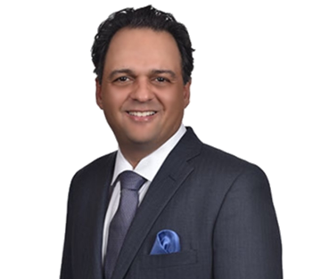

Distinguished interventional cardiologist with subspecialty certifications in vascular medicine and venous & lymphatic disorders — in private practice in the Orlando area since 2002.

Office: 8:00am-4:30pm,Phone: 8:30-4:30
Doctor Babak Alex Vakili, is a distinguished interventional cardiologist with additional sub- specialty certifications in vascular medicine as well as venous and lymphatic disorders. Dr. Vakili has been in private practice in the Orlando area since 2002 and brings over two decades of unparalleled expertise and dedication to cardiovascular medicine, setting him apart from his peers in the field.
Doctor Vakili’s academic journey began at New York University. After completing his undergraduate degree at NYU he was accepted to the prestigious Albert Einstein College of Medicine, where he earned his Doctor of Medicine degree with special distinction for research in cardiovascular medicine in 1995. He was then accepted to Cornell University where he completed his residency at The New York Hospital Medical Center. Dr Vakili returned to Albert Einstein to complete a 4 year program in cardiology and interventional cardiology fellowships, further honing his skills and knowledge under the mentorship of leading experts, including his mentor, Dr Edmund H. Sonnenblick. Born in 1932, Dr Sonnenblick was a pioneering American cardiologist, professor at Harvard Medical School with more than 600 published articles and 16 textbooks. Dr. Vakili was privileged and honored to have Dr. Sonnenblick as his mentor during his training and years in private practice.
Throughout his career, Doctor Vakili himself has held several prominent positions that highlight his leadership and commitment to advancing cardiovascular health. He served as the Chairman of the Department of Cardiology at Orlando Health and as director of Interventional Cardiology Catheterization Laboratory at Advent Health hospital system.
His teaching roles as Chief Fellow and at Medtronic Inc. and the C3 International Endovascular and Coronary Intervention Summit underscore his dedication to educating future generations of medical professional.
Dr. Vakili’s expertise is not limited to clinical practice; he is also a prolific researcher and a certified principal investigator. He has led numerous major phase 3 clinical trials, contributing valuable insights and advancements in cardiovascular treatments. His research has been widely published in top-tier medical journals and presented at national and international conferences, including the American Heart Association meetings, earning him recognition and respect within the medical community.
Patients at Heart, Vein, and Vascular Institute benefit from Dr. Vakili’s decades of hands on experience and knowledge along with his patient-centered approach, which emphasizes personalized care tailored to each individual’s unique health needs. Whether managing chronic conditions or providing preventive care, Dr. Vakili is committed to delivering compassionate, comprehensive, and effective treatment.
Dr. Vakili holds multiple board certifications, including:
His professional affiliations with leading medical institutions, including Advent Health and Orlando Health, further exemplify his commitment to excellence in patient care.
Dr. Vakili’s exceptional qualifications, combined with his passion for advancing cardiovascular health, make him a distinguished physician who stands out in his field. Patients can trust that they are receiving care from a highly skilled, knowledgeable, and compassionate professional dedicated to their well-being.
For more information about Dr. Vakili and the services offered at Heart, Vein, and Vascular Institute, or to schedule an appointment, please contact our office. We look forward to partnering with you on your journey to optimal heart health.
Request an appointment and our office will reach out to confirm — often the same week. A physician referral is required for diagnostic services.